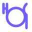

Day 1
2 December 2026Foundations & Design
Registration
Participant check-in and welcome materials.
Opening
Opening remarks and welcome to RiSS 2026.
Foundations of Quantum Software Engineering
Shaukat Ali · Simula Research Laboratory
Coffee break
Foundations of Quantum Software Engineering – Part II
Shaukat Ali · Simula Research Laboratory

Lunch
Quantum Software Engineering: Requirements and Design
Elisabetta Di Nitto · Politecnico di Milano
Coffee break
Quantum Software Engineering: Requirements and Design – Part II
Elisabetta Di Nitto · Politecnico di Milano